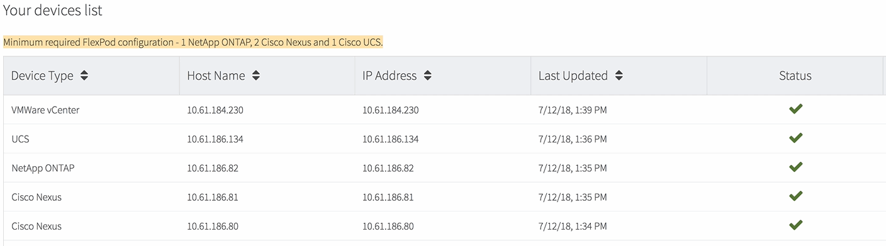
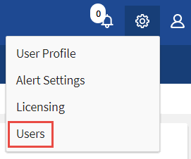

Converged Systems Advisor の利用を開始しましょう
寄稿者
Converged Systems Advisor を利用するには、環境を準備し、エージェントをインストールしてセットアップし、コンバージドインフラをポータルに追加する必要があります。
必要に応じて、を実行します "Converged Systems Advisor の仕組みをご確認ください" 始める前に
環境を準備
環境の準備では、構成のサポート状況の確認、エージェントのアカウントの作成、ネットアップサポートサイトのアカウントの登録を行います。
-
でサポートを確認します "NetApp Interoperability Matrix Tool で確認できます"：
-
Converged Systems Advisor が FlexPod コンバージドインフラをサポートしていることを確認します。
-
Converged Systems Advisor エージェントに対してサポートされている VMware ESXi サーバがあることを確認します。
帯域幅の使用量を最小限に抑えるために、 FlexPod コンバージドインフラと同じデータセンターにエージェントをインストールすることを推奨します。
-
-
エージェントをインストールするネットワークでコンポーネント間の接続が許可されていることを確認します。
-
エージェントは、設定データを収集できるように、各 FlexPod コンポーネントに接続する必要があります。
-
エージェントは、次のエンドポイントと通信するためにアウトバウンドインターネット接続も必要とします。
-
csa.netapp.com
-
docker.com
-
Docker .io と入力します
-
-
-
各 FlexPod コンポーネントでアカウントを作成します。
エージェントは、構成データを収集するためにクレデンシャルを必要としますエージェントの設定時にクレデンシャルを指定する必要があります。
-
にアクセスします "ネットアップサポートサイト" アカウントをお持ちでない場合は、アカウントに登録してください。
エージェントの設定およびポータルへのアクセスには、ネットアップサポートサイトのアカウントが必要です。
FlexPod デバイスでのアカウントの作成
Cisco UCS Manager と Cisco Nexus スイッチで読み取り専用アカウントを設定する必要があります。ONTAP システムと VMware には管理者アカウントが必要です。APIC 上の他のユーザーに対して、読み取り専用アクセスアカウントを設定できます。エージェントはこれらのアカウントを使用して、各デバイスから構成データを収集します。
Cisco UCS Manager の読み取り専用アカウントを作成します
-
Cisco UCS Manager にログインします。
-
ローカルで認証されたユーザ、 _csa-readonly_readonly を作成します。

デフォルトでは、新しいユーザはすべて読み取り専用です。
Nexus スイッチの読み取り専用アカウントを作成します
-
SSH または Telnet を使用して各 Nexus スイッチにログインします。
-
グローバルコンフィギュレーションモードを開始します。
configure terminal
-
新しいユーザを作成します。
username [name] password [password] role [role] .. 設定を保存します。
copy running configuration startup configuration
-
TACACS+ サーバを使用していて、 CSA ユーザ権限を付与する必要がある場合は、に進みます [Granting CSA user privileges using a TACACS+ server]。
ONTAP の管理者アカウントを作成します
-
OnCommand システムマネージャにログインし、設定アイコンをクリックします。
 。
。 -
[ ユーザー ] ページで、 [ * 追加 ] をクリックします。
-
ユーザ名とパスワードを入力し、 admin アクセス権を持つユーザログイン方法として * ssh * 、 * ontapi * 、 * console * を追加します。

VMware の読み取り専用アカウントを作成します
-
vCenter にログインします。
-
vCenter のメニューで、 * Administration * を選択します。
-
[ 役割 ] で、 [* 読み取り専用 *] を選択します。
-
Clone role action * のアイコンをクリックし、名前を * CSA * に変更します。
-
新しく作成した CSA ロールを選択します。
-
[ 役割を編集（ Edit role ） ] アイコンをクリックします。
-
「 * 役割の編集 * 」で「 * グローバル * 」を選択し、「 * ライセンス * 」をチェックします。
-
サイドバーで、 * シングルサインオン → ユーザーとグループ → 新規ユーザーの作成 * を選択します。
-
ドメイン vpsher.local の下の新しいユーザ * CSACRO * に名前を付けます。
-
サイドバーで、 * アクセスコントロール * の下の * グローバル許可 * を選択します。
-
ユーザ * CSACRO * を選択し、ロール * CSA* を割り当てます。
-
Web Client にログインします。
ユーザ ID ： * CSARO@vsphere.loca l * 、および以前に作成したパスワードを使用します。
APIC で読み取り専用アカウントを作成します
-
[Admin] をクリックします。
-
[Create new local users] をクリックします。
-
[* User Identity* （ユーザー ID ） ] で、ユーザー情報を入力します。
-
[* セキュリティ *] で、 [ すべてのセキュリティドメインオプション ] を選択します。
-
必要に応じて、 + をクリックしてユーザ証明書と SSH キーを追加します。
-
「 * 次へ * 」をクリックします。
-
[+] をクリックして、ドメインのロールを追加します。
-
ドロップダウン・メニューから * 役割名 * を選択します
-
[* Role Privilege Type] で [*Read] を選択します。
-
[ 完了 ] をクリックします。
エージェントの配備
VMware ESXi サーバに Converged Systems Advisor エージェントを導入する必要があります。エージェントは、 FlexPod コンバージドインフラ内の各デバイスに関する構成データを収集し、そのデータを Converged Systems Advisor ポータルに送信します。
エージェントをダウンロードしてインストールします
VMware ESXi サーバに Converged Systems Advisor エージェントを導入する必要があります。
帯域幅の使用量を最小限に抑えるには、 FlexPod 構成と同じデータセンターにある VMware ESXi サーバにエージェントをインストールする必要があります。エージェントは、各 FlexPod コンポーネントとインターネットに接続し、 HTTPS ポート 443 を使用して Converged Systems Advisor ポータルに設定データを送信できるようにする必要があります。
エージェントは、 Open Virtualization Format （ OVF ）テンプレートから VMware vSphere 仮想マシンとして導入されます。このテンプレートは、 1 vCPU と 2 GB の RAM を持つ Debian ベースのものです（複数以上の FlexPod システムに必要な場合があります）。
-
エージェントをダウンロードします。
-
にログインします "Converged Systems Advisor ポータル"。
-
［ * エージェントのダウンロード * ］ をクリックします。
-
-
VMware ESXi サーバに OVF テンプレートを導入して、エージェントをインストールします。
VMware の一部のバージョンでは、 OVF テンプレートの導入時に警告が表示されることがあります。仮想マシンは最新バージョンの vCenter で開発されたものであり、古いバージョンのハードウェアとの互換性があるため、警告が表示される可能性があります。警告を確認してからインストールを続行する前に、設定オプションを確認してください。
エージェントのネットワークを設定します
エージェントと FlexPod デバイス間、およびエージェントと複数のインターネットエンドポイント間の通信を可能にするには、エージェント仮想マシンでネットワークが正しく設定されていることを確認する必要があります。ネットワークスタックは、システムが初期化されるまで仮想マシン上で無効になります。
-
アウトバウンドインターネット接続で、次のエンドポイントへのアクセスが有効になっていることを確認します。
-
csa.netapp.com
-
docker.com
-
Docker .io と入力します
-
-
VMware vSphere Client を使用して、エージェントの仮想マシンコンソールにログインします。
デフォルトのユーザ名は「 CSA 」で、デフォルトのパスワードは「 netapp 」です。
セキュリティ上の理由から、 SSHD はデフォルトで無効になっています。 -
プロンプトが表示されたら、デフォルトのパスワードを変更し、パスワードをメモします。回復できないためです。
パスワードを変更すると、システムがリブートし、エージェントソフトウェアが起動します。
-
DHCP がサブネットにない場合は、標準の Debian ツールを使用して静的 IP アドレスと DNS 設定を構成し、エージェントを再起動します。
Debian 仮想マシンのネットワーク構成は、デフォルトで DHCP に設定されています。NetworkManager がインストールされ、コマンド nmtui から起動できるテキストユーザインターフェイスが提供されます（を参照） "のマニュアルページ" 詳細については、を参照してください）。
ネットワークの詳細については、を参照してください "Debian wiki のネットワーク設定ページ"。
-
セキュリティポリシーで、 FlexPod デバイスと通信するためにエージェントを 1 つのネットワークに配置し、インターネットと通信するために別のネットワークに配置する必要がある場合は、 vCenter で 2 つ目のネットワークインターフェイスを追加し、正しい VLAN と IP アドレスを設定します。
-
インターネットアクセスにプロキシサーバが必要な場合は、次のコマンドを実行します。
'UDO CSA_SET_PROXY'
このコマンドにより、 2 つのプロンプトが生成され、プロキシエントリに必要な形式が表示されます。最初のプロンプトでは HTTP プロキシを指定し、 2 番目のプロンプトでは HTTPS プロキシを指定できます。
HTTP プロキシのプロンプトは次のとおりです。

-
ネットワークが起動したら、システムがアップデートされて起動するまで約 5 分間待ちます。
エージェントが動作可能になると、コンソールにブロードキャストメッセージが表示されます。
-
エージェントから次の CLI コマンドを実行して、接続を確認します。
curl -k https://www.netapp.com/us/index.aspx
コマンドが失敗した場合は、 DNS 設定を確認します。エージェント仮想マシンには、有効な DNS 設定があり、 csa.netapp.com にアクセスできる必要があります。
エージェントへの SSL 証明書のインストール
仮想マシンの初回ブート時に、エージェントが自己署名証明書を作成します。必要に応じて、その証明書を削除して独自の SSL 証明書を使用できます。
Converged Systems Advisor は次の機能をサポートします。
-
OpenSSL バージョン 1.0.1 以降と互換性のあるすべての暗号
-
TLS 1.1 および TLS 1.2
-
エージェントの仮想マシンコンソールにログインします。
-
/opt/csa/certs に移動します
-
エージェントが作成した自己署名証明書を削除します。
-
SSL 証明書を貼り付けます。
-
仮想マシンを再起動します。
FlexPod インフラストラクチャを検出するためのエージェントの構成
FlexPod コンバージドインフラの各デバイスから構成データを収集するようにエージェントを設定する必要があります。
-
Web ブラウザを開き、エージェント仮想マシンの IP アドレスを入力します。
-
ネットアップサポートサイトのアカウントのユーザ名とパスワードを入力して、エージェントにログインします。
-
エージェントが検出する FlexPod デバイスを追加します。
次の 2 つのオプションがあります。
-
[ デバイスの追加 ] をクリックして、 FlexPod デバイスの詳細を 1 つずつ入力します。
-
[ デバイスのインポート ] をクリックして、すべてのデバイスの詳細を含む CSV テンプレートを入力し、アップロードします。
次の点に注意してください。
-
ユーザー名とパスワードは、以前にデバイス用に作成したアカウントのものである必要があります。
-
UCS 環境で LDAP ユーザ管理が設定されている場合は、ユーザ名の前にユーザのドメインを追加する必要があります。たとえば、 local\csa-readonly と指定します
-
-
FlexPod インフラストラクチャ内の各デバイスがチェックマーク付きで表に表示されます。

ポータルにインフラストラクチャを追加する
エージェントを設定すると、各 FlexPod デバイスに関する情報が Converged Systems Advisor ポータルに送信されます。ここで、ポータル内の各コンポーネントを選択して、監視可能なインフラ全体を作成する必要があります。
-
を参照してください "Converged Systems Advisor ポータル"をクリックし、 [ インフラストラクチャの追加 ] をクリックします。
-
インフラを追加する手順を実行します。
-
インフラの基本的な詳細を入力します。
Cisco ACI インフラを追加する場合は、 FlexPod で Cisco UCS Manager を使用しているかどうかを尋ねられたら「 * yes * 」と入力し、 FlexPod に含まれているネットワーク構成のタイプを尋ねられたら ACI モード * で「 * Nexus switch 」と入力します。
-
FlexPod 構成の一部である各デバイスを選択します。
デバイスを選択すると、 [Eligibility ( 対象 )] 列に Eligible ( 対象 ) * または *Not Eligible ( 対象外 ) と表示されます。デバイスが別のエージェントによって検出された場合、そのデバイスは使用できません。 必要なコンポーネントをすべて選択したら、各デバイスタイプの横に緑色のチェックマークが表示されます。

-
を追加します "Converged Systems Advisor のシリアル番号" キー機能のロックを解除します。
-
概要を確認し、ライセンス契約の条項に同意して、 [ * インフラストラクチャの追加 * ] をクリックします。
-
Converged Systems Advisor はポータルにインフラを追加し、各デバイスに関する構成データの収集を開始します。エージェントがデバイスから情報を収集するまで数分待ちます。
他のユーザーとインフラストラクチャを共有する
コンバージドインフラを共有すると、別のユーザが Converged Systems Advisor ポータルにログインして構成を表示および監視できるようになります。インフラを共有するユーザには、が必要です "ネットアップサポートサイト" アカウント：
-
Converged Systems Advisor ポータルで、「 * Settings 」アイコン * をクリックし、「 * Users 」をクリックします。

-
User テーブルから設定を選択します。
-
をクリックします
 をクリックします。
をクリックします。 -
指定するユーザロールの横に、 E メールアドレスを 1 つ以上入力します。
1 つのフィールドに複数の E メールアドレスを入力するには、最初の E メールアドレスのあとに「 * Enter 」キーを押します。 -
[ 送信（ Send ） ] をクリックします。
Converged Systems Advisor へのアクセス方法が記載された E メールが送信されます。
TACACS+ サーバを使用した CSA ユーザ権限の付与
TACACS+ サーバを使用していて、スイッチに CSA ユーザ権限を付与する必要がある場合は、ユーザ権限グループを作成し、 CSA が必要とする特定のセットアップコマンドへのグループアクセスを許可する必要があります。
次のコマンドは、 TACACS+ サーバのコンフィギュレーションファイルに記述する必要があります。
-
次のコマンドを入力して、読み取り専用アクセス権を持つユーザ権限グループを作成します。 group=group_name ｛ default service=deny service=exec ｛ priv-lvl=0 ｝
-
CSA が必要とするコマンドへのアクセスを許可するには、次のコマンドを入力します。 cmd= show ｛ permit "environment "permit " version " permit " feature "permit " feature-set "permit hardware * permit " interface "permit " interface transceiver "permit " inventory " permit " module "permit " port-channel database "NTP peers " permit " ntp peers " permit " ntp peers " port channel summary "permit" portchannel summary "startup-config "running-config permit "CDP neighbors detail "permit "vlan "permit "vPC" permit "vc peer-keepalive" mac address-table "permit "LACP portchannel" permit "policy-map " policy-map system type qos "permit " policy-map system type queueing" policy-map system type queueing "permit " policy-map system type network-qos" permit " zoneset active "permit " zoneset active "fclogfns database permit " 「 zoneset active 」 permit 「 vsan 」 permit 「 vsan usage 」 permit 「 vsan membership 」 ｝ を許可します
-
次のコマンドを入力して、新しく作成したグループに CSA ユーザアカウントを追加します。 user=user_account ｛ member=group_name login=file /etc/passwd ｝
通知の設定
Premium ライセンスがある場合は、 Converged Systems Advisor から FlexPod インフラの変更に関するアラートを E メールで通知できます。
-
Converged Systems Advisor ポータルで、 * 設定アイコン * をクリックし、 * アラート設定 * をクリックします。
-
Premium ライセンスを持つ各コンバージドインフラについて、受け取る通知を確認します。
各通知には次の情報が含まれます。
- 収集の失敗
-
Converged Systems Advisor がコンバージドインフラからデータを収集できない場合に警告します。
- オフラインエージェント
-
Converged Systems Advisor エージェントがオンラインでない場合に通知します。
- 日次アラートダイジェスト
-
前日に発生した失敗したルールに関するアラート。
-
[ 保存（ Save ） ] をクリックします。
Converged Systems Advisor から、コンバージドインフラに関連付けられているユーザに E メール通知が送信されるようになりました。
 ドキュメントの変更をリクエスト
ドキュメントの変更をリクエスト GitHub で編集
GitHub で編集 寄稿者向けガイド
寄稿者向けガイド